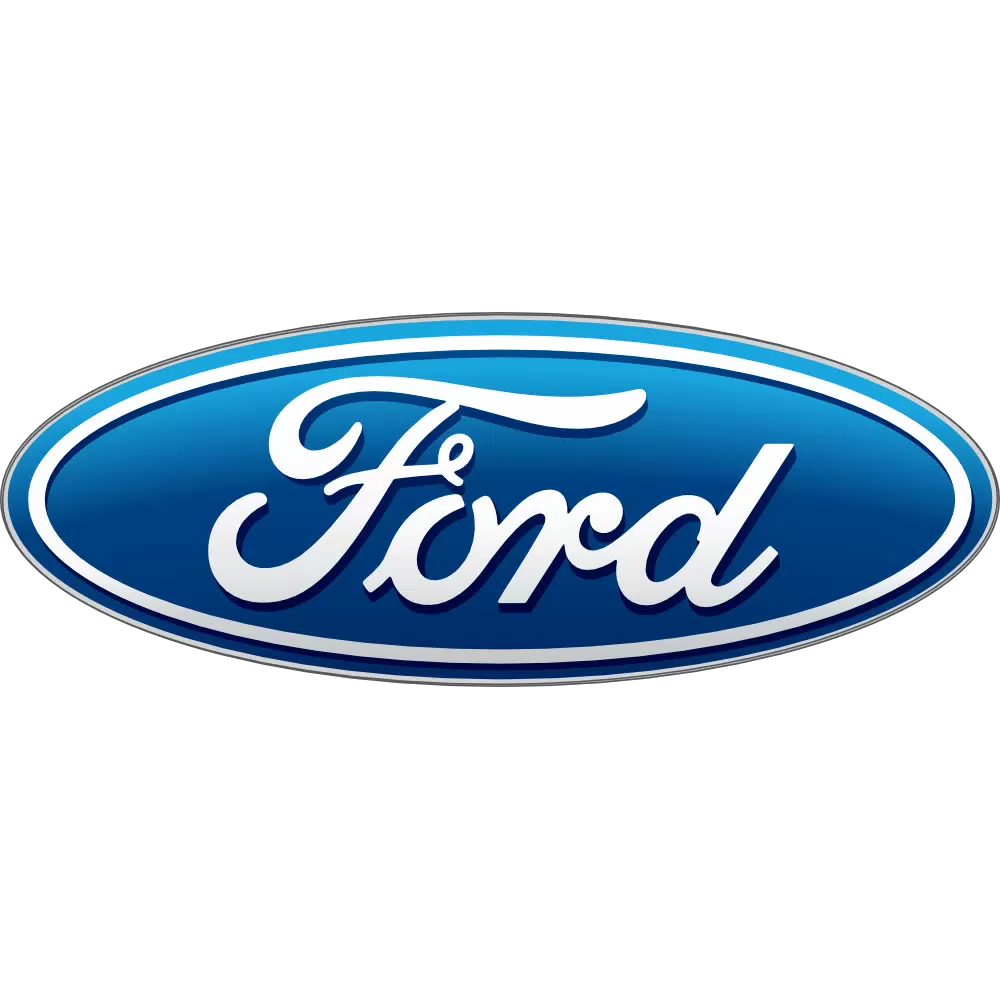
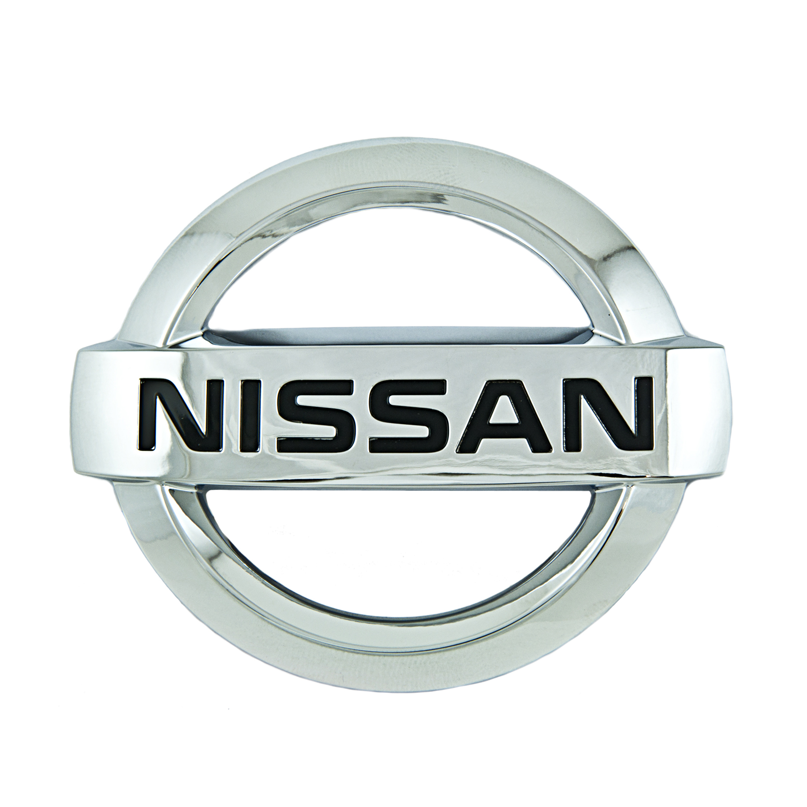
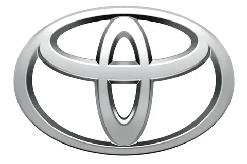

Ford - Американская автомобилестроительная компания. Четвёртый в мире производитель автомобилей по объёму выпуска за весь период существования. Первой применила конвейерное производство. \ Помимо легковых автомобилей за свою историю производила грузовую, военную колёсную и гусеничную технику, авиационные запчасти и двигатели


Nissan - Японский автопроизводитель, один из крупнейших в мире. Компания основана в 1933 году. Штаб-квартира находится в городе Иокогама. Входит в Альянс Renault–Nissan–Mitsubishi. Известные модели: Almera, Patrol, Terrano II, Maxima QX, Primera, Micra, Teana, X-Trail, Murano, Qashqai, Pathfinder

Toyota - Японская автомобилестроительная корпорация, также предоставляющая финансовые услуги и имеющая несколько дополнительных направлений в бизнесе. Является крупнейшей автомобилестроительной публичной компанией в мире, а также крупнейшей публичной компанией в Японии.